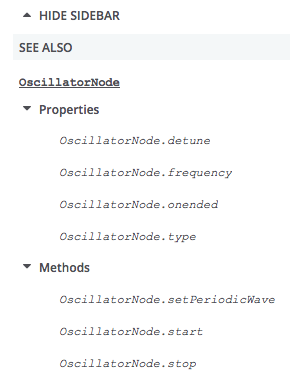

このガイドでは、 MDN で API リファレンスを書くために必要なことをすべて説明しています。
API のドキュメントを実際に書き始める前に、事前に準備や計画をしておくべきことがいくつかあります。
このガイドを読む前に、以下の知識を持っている人を想定しています。
それ以外のことは、途中で学ぶことができます。
訳注: リファレンス記事は最初に英語版の記事を書いてください。英語版の記事なしに、日本語版のリファレンス記事を書くことはできません。したがって、執筆には英語の知識が必要です。
API の文書化を始める前に、次のものが利用できるようにしてください。
API を文書化する過程で、何度もデモの作成に戻ることになりますが、まずは API がどのように動作するかに慣れることに時間を費やすことが有益です。主なインターフェース、プロパティ、メソッドが何であるか、主な利用法は何か、そしてそれを使ってどのように簡単な機能を書くかを学びましょう。
API が変更された場合、参考にしたり学んだりする既存のデモが古くなっていないか注意する必要があります。デモで使われている主な構成要素が、最新の仕様と一致しているかどうかを確認してください。また、最新のブラウザーでは動作しないかもしれませんが、古い機能が後方互換性のために対応し続けていることが多いので、これはあまり信頼できるテストではありません。
注: 仕様が最近更新されたばかりで、メソッドの定義が変わったが、古いメソッドがまだブラウザーで動作している場合、新旧のメソッドをカバーするために、両方を同じ場所に記述しなければならないことがよくあります。困ったときは、見つけたデモを参考にしたり、エンジニアに聞いてみたりしてください。
API リファレンスには、通常、以下のページが含まれます。各ページの内容、例、テンプレートなどの詳細については、ページの種類の記事をご覧ください。始める前に、作成すべきすべてのページのリストを書き出してください。
注: この記事では例として Web Audio API を参照します。
単一の API 概要ページは、 API の役割、最上位のインターフェイス、他のインターフェイスに含まれる関連機能、その他の高レベルの詳細を説明するために使用されます。その名前とスラッグは、 API の名前と末尾に "API" を付けたものでなければなりません。 https://developer.mozilla.org/en-US/docs/Web/API の子として、 API リファレンスの最上位に配置されます。
例:
それぞれのインターフェイスには独自のページがあり、インターフェイスの目的を説明し、すべてのメンバー (コンストラクター、メソッド、プロパティなど) をリストアップし、どのブラウザーで互換性があるかを示しています。ページの名前とスラッグは、仕様書に書かれている通りのインターフェイスの名前でなければなりません。各ページは、 https://developer.mozilla.org/en-US/docs/Web/API の子として、 API リファレンスの最上位に配置されます。
例:
注: 私たちは、インターフェイスに登場するすべてのメンバーを記録しています。以下のルールを意識してください。
toString()) や JSON 化 (toJSON()) などの特別なメソッドが存在する場合は、それらも記載します。Image() など) も、関連性があれば掲載してください。各インターフェイスには 0 個または 1 個のコンストラクターがあり、インターフェイスのページのサブページに文書化します。コンストラクターの目的を記載し、どのような構文なのか、使用例、ブラウザー互換性情報などを示します。スラッグはインターフェイス名とまったく同じコンストラクター名で、タイトルはインターフェイス名、ドット、コンストラクター名、そして最後に括弧が入ります。
例:
各インターフェイスには 0 個以上のプロパティがあり、インターフェイスのページのサブページに文書化します。各ページには、プロパティの目的を記載し、どのような構文なのか、使用例、ブラウザー互換性情報などを示します。スラッグはプロパティの名前で、タイトルはインターフェイス名、ドット、プロパティ名の順になっています。
例:
注: イベントハンドラープロパティは、通常のプロパティと同じように扱われますが、インターフェースページでは一般的に別の節に記載されます。
各インターフェイスには 0 個以上のメソッドがあり、インターフェイスのページのサブページに文書化します。各ページには、メソッドの目的を記載し、どのような構文なのか、使用例、ブラウザー互換性情報などを示します。タイトルはインターフェイス名、ドット、メソッド名、そして最後に括弧が入ります。
例:
Each event handler property you create will have a corresponding event page, describing the event that causes the handler to fire, documented on a subpage of https://developer.mozilla.org/en-US/docs/Web/Events. Each page describes the purpose of the event and shows what its syntax looks like, usage examples, browser compatibility information, etc. Its slug and title is the name of the event.
Example:
Most API references have at least one guide and sometimes also a concept page to accompany it. At minimum, an API reference should contain a guide called "Using the name-of-api", which will provide a basic guide to how to use the API. More complex APIs may require multiple usage guides to explain how to use different aspects of the API.
If required, you can also including a concepts article called "name-of-api concepts", which will provide explanation of the theory behind any concepts related to the API that developers should understand to effectively use it.
These articles should all be created as subpages of the API overview page. For example, the Web Audio has four guides and a concept article:
You should create some examples that demonstrate at least the most common use cases of the API. You can put these anywhere that is appropriate, although the recommended place is the MDN GitHub repo.
Creating a list of all these subpages is a good way to track them. For example:
Each interface in the list has a separate page created for it as a subpage of https://developer.mozilla.org/en-US/docs/Web/API; for example, the document for {{domxref("AudioContext")}} would be located at https://developer.mozilla.org/en-US/docs/Web/API/AudioContext. Each {{anch("Interface pages", "interface page")}} explains what that interface does and provides a list of the methods and properties that comprise the interface. Then each method and property is documented on its own page, which is created as a subpage of the interface it's a member of. For instance, {{domxref("BaseAudioContext/currentTime")}} is documented at https://developer.mozilla.org/en-US/docs/Web/API/AudioContext/currentTime.
Now create the pages you need, according to the structures below. Our MDN content README contains instructions on creating a new document, and our Page types guide contains further examples and page templates that might be useful.
API landing pages will differ greatly in length, depending on how big the API is, but they will all have basically the same features. See https://developer.mozilla.org/en-US/docs/Web/API/Web_Audio_API for an example of a big landing page.
The features of a landing page are outlined below:
Now you should be ready to start writing your interface pages. Each interface reference page should observe the following structure:

List of properties, List of methods: These sections should be titled "Properties" and "Methods", and provide links (using the \{{domxref}} macro) to a reference page for each property/method of that interface, along with a description of what each one does. These should be marked up using description/definition lists, which can be created using the "Definition List", "Definition Term", and "Definition Description" buttons on the MDN editor toolbar. Each description should be short and concise — one sentence if possible. See the "Referencing other API features with the \{{domxref}} macro" section for a quicker way to create links to other pages.
At the beginning of both sections, before the beginning of the list of properties/methods, indicate inheritance using the appropriate sentence, in italics:
This interface doesn't implement any specific properties, but inherits properties from \{{domxref("XYZ")}}, and \{{domxref("XYZ2")}}.
This interface also inherits properties from \{{domxref("XYZ")}}, and \{{domxref("XYZ2")}}.
This interface doesn't implement any specific methods, but inherits methods from \{{domxref("XYZ")}}, and \{{domxref("XYZ2")}}.
This interface also inherits methods from \{{domxref("XYZ")}}, and \{{domxref("XYZ2")}}.
Note: If the interface features event handlers, put these inside the "Properties" section (they are a type of property) under a subheading of "Event handlers".
Note: Properties that are read-only should have the \{{readonlyInline}} macro, which creates a nifty little "Read only" badge, included on the same line as their \{{domxref}} links (after the use of the \{{experimentalInline}}, \{{non-standard_Inline}} and \{{deprecatedInline}} macros, if some of these are needed.
The following are exemplary examples of Interface pages:
Create your property pages as subpages of the interface they are implemented on. Copy the structure of another property page to act as the basis for your new page.
Edit the property page name to follow the Interface.property_name convention.
Property pages must have the following sections:
.prototype. in the title, like we do in the JavaScript reference.InterfaceName.property read-only property returns a \{{domxref("type")}} that...InterfaceName.property property is a \{{domxref("type")}} that…InterfaceName.property should be in <code>, and should additionally be in bold (<strong>) the first time it's used.syntaxbox class for it and italics for part to be replaced by the actual variable name. For example:
var myType = oscillator.type; oscillator.type = aType;The syntax section should also have a subsection — "Value", which will contain a description of the property's value. This should contain the data type of the property, and what it represents. For an example, see {{domxref("SpeechRecognition.grammars")}}
Examples: Include a code listing to show typical usage of the property in question. You should start with a simple example that shows how an object of the type is created and how to access the property. More complex examples can be added after such an example. In these additional examples, rather than listing ALL the code, you should list an interesting subset of it. For a complete code listing, you can reference a Github repo containing the full example, and you could also link to a live example created using the github gh-pages feature (so long as it uses only client-side code of course.) If the example is visual, you could also use the MDN Live Sample feature to make it live and playable in the page.
The following are exemplary examples of property pages:
Create your method pages as subpages of the interface they are implemented on. Copy the structure of another method page to act as the basis for your new page.
Method pages need the following sections:
.prototype. in the title, like we do in the JavaScript reference.InterfaceName.method() should be in <code>, and should also be in bold (<strong>) the first time it's used.void as return value in the webidl), use:The following are exemplary examples of Interface pages:
For API reference pages, there are standard tags that all pages should have:
For Interface pages, also add:
For method pages, also add:
For property pages, also add:
In all cases, also add a keyword indicating the standardization status:
These tags will be used to generate correct quicklinks, with nice icons. See How to properly tag pages for additional information on tagging, as well as about other tags you may find useful.
Once you've created your API reference pages, you'll want to insert the correct sidebars on them to associate the pages together. Our API reference sidebars guide explains how.